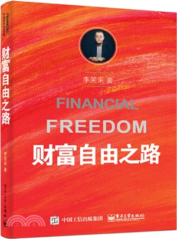

《七年就是一輩子》、《人人都能用英语》、《把時間當作朋友》，李笑來的相關創作質量都相當高，每次都能給我不少收穫。
人類是一種習慣性生物，絕大多數的人都會天天刷牙、洗澡，習慣一旦形成就是數十年如一日。
但若把刷牙換成學習，就完全變成另一回事了。
很少人能做到天天學習，放棄能進化成另一種物種的機會。
學習其實是一種生活方式，只要投入時間和精力，從長期來看，沒有什麼是學不會的。
一旦學會的東西越多，在學習新的東西時速度就越快。
書中不斷強調，人類就像電腦一樣，能夠針對硬體或軟體升級，關鍵在於你的價值觀、執行力及做出的選擇。
《財富自由之路》，原先以為這是本內容完全著重在投資概念、策略上的理財讀物，但其實它就是一本學習成長手冊。
“Compound interest is the eighth wonder of the world. He who understands it, earns it … he who doesn’t … pays it.” ― Albert Einstein
愛因斯坦說過這麼一句話，複利是“世界第八大奇蹟”。知之者賺，不知之者被賺。
其基本公式是
FV = PV(1 + i)^n
FV(Future Value)：財富在未來的價值
PV(Present Value)：本金
i(interest)：是指一段周期內的報酬率
n：累積的週期
假設年化報酬率是 10%，10 年後本金會變成 2.59 倍。
假設年化報酬率是 30%，10 年後本金會變成破天荒的 13.78 倍。
時間越長，報酬率越高，複利效應的影響越大。
每個人的人生，也可以套入同樣的公式去計算，從出生開始，所有人都不斷的學習各種技能，不斷地累積。
但許多人一旦踏出學校就停止了學習，放棄了在未來體會到複利效應的機會。
財富自由是許多人一生的目標，維基百科中的定義是這樣的「你無需為生活開銷而努力為錢工作的狀態，亦即你的資產產生的被動收入可以滿足你的日常支出。」。
作者在探討這個定義時，給予了財富自由一個新的解釋，「財富自由，是指某個人再也不用為了滿足生活而出售自己的時間。」
當財富自由達成時，並不是到達了終點，而只是完成了一個里程碑，真正的路還有很長一段。
商業模式，並不是企業的專利。
每個人為了獲得收入都在販售自己的時間，個人商業模式，就是如何販售自己時間的方式。
個人商業模式可以分成三種
a. 一份時間出售一次
b. 一份時間出售多次
c. 購買別人的時間來出售
這種商業模式是最常見的，工作多少時間就可以換取對等的薪水，工讀生、上班族都屬於這種個人商業模式。
要優化第一類型個人商業模式，可以透過提高單位時間的售價以及提高銷售的時間數量來換取更優渥的待遇。
此外，還可以從一份時間出售一次轉變成出售兩次的狀態，一次是出售給老闆，一次是出售給自己，在工作的同時自我成長，不但能獲取薪資，還能有效精進自己。
而市場上我們所領取的待遇只是一種估值，不要太過專注在估值上，而是要完全關注在自己的持續成長上，一旦陷入估值的迷思，無論是低估或高估，都會始終覺得不滿意。
作者、部落客、Youtuber、歌手…等，任何創作產業都是屬於這種類型的個人商業模式。
透過一次性的創意製造，就能產生持續性的收入。
推出的產品最為重要的是剛需，且必須是消費者認為的剛需。
以英文學習來舉例，所有人都清楚學習英文的唯一捷徑是使用它，但市面上賣得最好的語言學習書籍永遠都是單字書、多益解析、托福重點單詞…等等，因為它們滿足了消費者的剛需。
創業和投資都屬於這種個人商業模式，是級別最高的一種，透過購買他人的時間來突破時間總量的限制，原則是所有商業模式的共通之處，買低賣高。
雖說這是級別最高的一種個人商業模式，或許很多人會覺得離自己相當遙遠，但事實上每個人都在使用。
既然，你的目標是“終有一天不用再出售自己的時間”
那麼，你的行動就應該是“想辦法合理地逐步減少自己出售時間的數量”
所以，方法就是“在能用錢換時間的時候盡量用錢換時間”
進而，將省下來的時間全都“投資”到自己的“持續進化”上去
書，就是一個最佳的投資方向，有許多人認為書很貴，但它可是天底下最便宜的東西！
透過少少的支出就能夠購買到別人花費高額時間所完成的東西，最重要的是能讓我們的學習能力進化，使我們的操作系統不斷升級。
人跟電腦是一樣的，電腦的軟硬體會因為汰換而需要不定時升級、更新。
要升級硬體，可以透過鍛鍊身體來讓自己更加強壯。
要升級軟體，可以學習一項新技能。
大腦是可以持續進化的器官，我們可以支配它，讓我們的操作系統不斷升級。
是我們的財富之一，它是能夠在任何地方挖掘價值的最基本工具。
與時間不同，我們無法支配並管理時間，我們只能管理自己。
將所有的注意力都放到自己的成長上，不需要去證明自己，因為成長如果成真，證明也自動完成了。
元認知(後設認知)，即「認知的認知」，許多人常常有所謂的錯誤認知，別人說什麼就信什麼，或是根本不清楚自己其實不知道。
這種對自己的認知不認知的情況，會大大影響操作系統的升級。
為了不斷升級我們的心智，需要訓練我們的元認知能力，對任何事情都要經由自己的思考才做判斷，而不要人云亦云、不懂裝懂。
抱怨，是一種所有人都需要戒掉的惡習，它什麼都不是，就只是無能和無奈的一種表現。
當我們遇到問題時，能解決就去解決，不能解決就去承受。
說話是一種大腦重塑的過程，每個人都傾向不由自主地扮演我們向別人描繪的那個樣子，直到真的成為那個樣子。
如果真的想要成長，就遠離抱怨和抱怨之人吧！
在這個競爭如此激烈的社會中，我們該如何從平庸到卓越？
每一個專業領域中，往往都只有一個第一，加上少數強者。
注意力、天賦、耐心…等，都是決定自己在這個領域中表現程度的重要因素。
在每個維度中，我們無法輕易翻轉該維度的現況，但可以透過多維度的開拓打造競爭力。
一維空間中，比的是長度。
二維空間中，比的是面積。
三維空間中，比的是體積。
當維度越多，能夠組合出來的技能也就更少人擁有。
只擁有一種技能，且技能在該維度只達到前 50%，代表贏過一半的人。
擁有了十種技能，每種技能也都只有該維度的前 50%，其產生的維度組合，會讓你成為該組合維度下前 0.001% 的強者。
一個人的學習能力就是天生的外掛，但絕大多數人在這一生中都處於裝備不全或者落後的狀態，更別說要開外掛了。
許多人會為自己的“技不如人”苦惱，雖然擁有上進心，但仍終生原地踏步。
在不同階段下，學習能力都會處於不同的境界：
第一階段：能學會有人手把手教授的技能
第二階段：能學會書本上所教授的技能
第三階段：能學會沒有人能教授的技能
許多人這一生連第一階段都無法突破，在有人耐心教導時，沒有好好利用優勢，確實地把自己的思考帶入，只會不經思考、依樣畫葫蘆，形成付錢上課卻沒有收穫的現象，這只是一種付錢了事的心態罷了。
第二階段是這個網路時代的最大優勢，透過網際網路，我們可以隨時取得任何專業知識的資料，但許多人這一生都被第一階段所束縛、不肯動腦，也就完全享受不到這一階段帶來的效益。
第三階段是最困難的階段，在網際網路上我們可以複製、收集各種資料，來學會自己不會但其他人願意分享的技能，但充其量只能不斷重複他人的道路，無法開拓一條全新的道路。我們需要不斷思考、琢磨自己的道路，聽大多數人的話，參考少數人的意見，最終自己做決定。